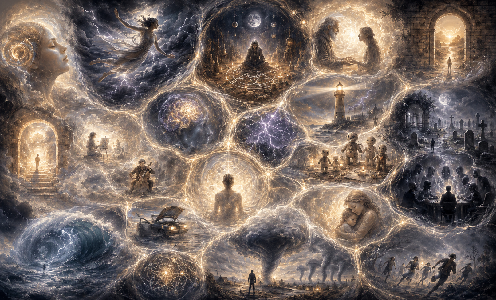

Resources
Learn more
Two foundational researchers in lucid dreaming are Keith Hearne and Stephen LaBerge.
There is a vast amount of information about lucid dreaming techniques online, so I do not share much of that content here. Still, I’d like to share one technique that I have developed myself. It is not exactly a lucid dreaming technique, but a dreaming practice, which I call: dream navigation.
Dream navigation
I’ve been doing this for many years, since before I knew what lucid dreaming was. I’ve always been fascinated by my dream world and felt like half of my life was somewhere else, in an inaccessible place that I nostalgically missed. I thought I could never get back there. So I used to navigate my dream memories as a way of returning, until I found out it was actually possible to do go back!
This practice is about activating dream memories and, in this way, being in closer contact with your dreams. I feel it has a very positive effect on my dream recall, which supports my lucid dreaming practice.
This is how the practice goes. Try it for a few minutes, from 1 to 15 minutes, for example.
- Close your eyes.
- Think of the earliest or most meaningful dream you ever had.
- Explore the memory as thoroughly as you can. Look around each part of the environment and feel everything that there is to feel about it.
- As soon as a new dream memory associated with that memory pops up in your mind, switch to this other dream.
- If nothing comes to mind, continue to explore that dream until you feel like there is nothing elsecoming up today.
- One dream will lead to another, and then another. You will start remembering dreams you hadn’t thought about in a while, which happened many years ago.
It is a wonderful feeling.
